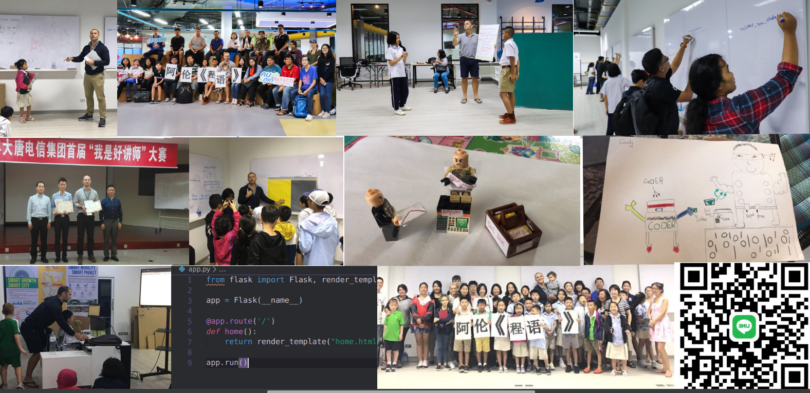
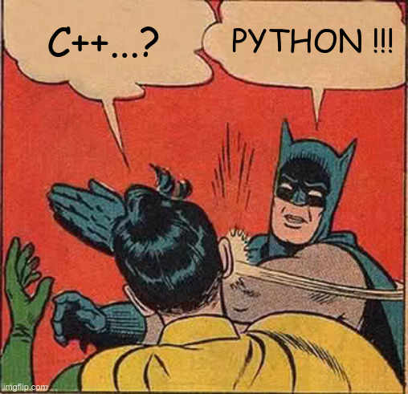
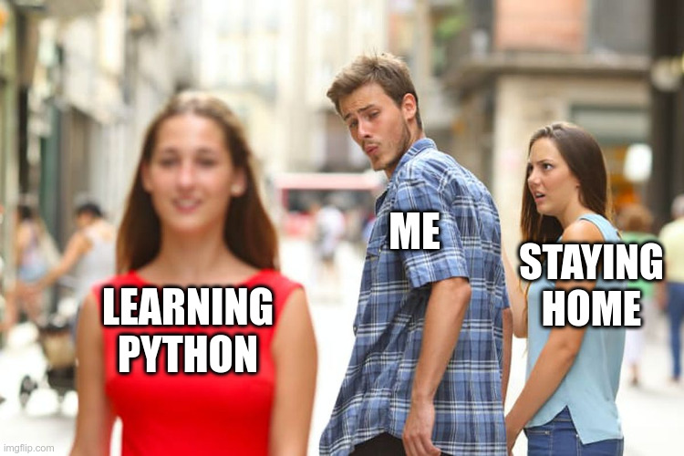

laurent
https://laurenthyz.github.io/pythonphuket/pythonpresentation.html
Today Phuket and the world is out of the woods as far as the COVID19 is concerned, yet most of use are bound to stay here for at least a couple of months in what I feel is a “floating state”. If you are sick of “floating” and you want to go back to learning then please read on.
My name is Laurent, I am ex telecom-expert with a passion for teaching programming.
https://goo.gl/maps/tLNTzCc5tMBP7JTY7

During the relatively short-time I have spent in Phuket I have taught various class sizes (up to 30 people), various age-groups (children +7yo, teenagers and adults), check out the pictures below.
If you are remotely interested in learning about computer, programming languages, or if in general you want to make the most of the coming months to shape-up your brains, please go on reading. If you have people around you who are interested in coding kindly forward this message accordingly.

We all know that computer programming/CODING is an important skill, but do you know which coding language is the world’s most popular and grows the fastest? That would be PYTHON. Python popularity is in part due to the fact it is easy to learn, so much so that nowadays most high-schools and universities are using it in their introduction to programming. Python is also very powerful: data analysis , AI/ML, Automation, Web apps etc Python can do it all.
You are already sold and willing to start? Feel free to LINE me. You are experienced in other languages and simply want to add a string to your bow? No problem we can do that… that being said I ALSO want to reach out to the people who think that coding is not for them. Some of them might think: “ I am not good at math/physics/science”, “I can barely type on my computer”, “I am not a computer person”, “Technology and programming scare me”, “coding is for tech-oriented people” etc… I want to tell those people that learning how to code is potentially within your reach, most definitely. All you need now is some type of method to actualize that potential.
If the negative self-talks I have listed above is all that keeps you from starting coding then let me be confidently blunt: you need to work with me, even for a couple of hours. I will convince/show you how Python is essentially an easy-to-learn English dialect that can actually be taught very well with a whiteboard, a pen and a sheet of paper. I have done it enough time to know it works with nothing else than a pen and paper. Whenever necessary I might use some boxes/ropes/wooden pieces too. Essentially the heart of my method and philosophy when teaching beginners is two-fold: 1) the more abstract the subject, the less you should use digital tools* to teach it 2) New and modern subjects should be taught through traditional methods whenever possible.
Now does it mean that we can learn all of python in a month? No. It means that once you have connected [your original inner learning engine] to [Python] through the use of tools and methods that your brains are familiar with (pen/paper, chalk/blackboard, activities) then you will find yourself on a familiar learning path. That stage during which we connect your existing learning engine to the new subject I call it grounding. Grounding is important because it optimizes the germination of new/foreign/abstract knowledge. If you think coding might be difficult for you then the grounding stage is not just important, it is necessary.
The current situation is challenging but truthfully it could very well be an amazing opportunity for you or your children to acquire a foundational skill. As for me I am getting a lot of energy from helping people demystify technology, that energy helps my own foundational skill learning I am doing during this COVID summer. For that reason I will dedicate no more than 10 hours per week on teaching PYTHON, consequently if that’s something you would like to try just dm me on LINE today, please provide: name, location in Phuket, if you wish to take classes at your place or if you can come to my office-space in Central. If you have the right hardware setup (especially mic and drawing tablet) it is possible to make online class but I would rather your first 5 hours to be face-to-face. If you are open to group class we can do that, there will not be more than 5 people per class… So that’s easy, please gather up that type of info and LINE me, this way we have some elements to start planifying. I have written this text on one go, at time it actually reads like those generic advertisement we have all received, and you know what? I don’t feel bad about it, in fact since I am confident that I can jump-start your coding, why not knocking-down whatever hesitation you might still have and offer a money-back guarantee.
